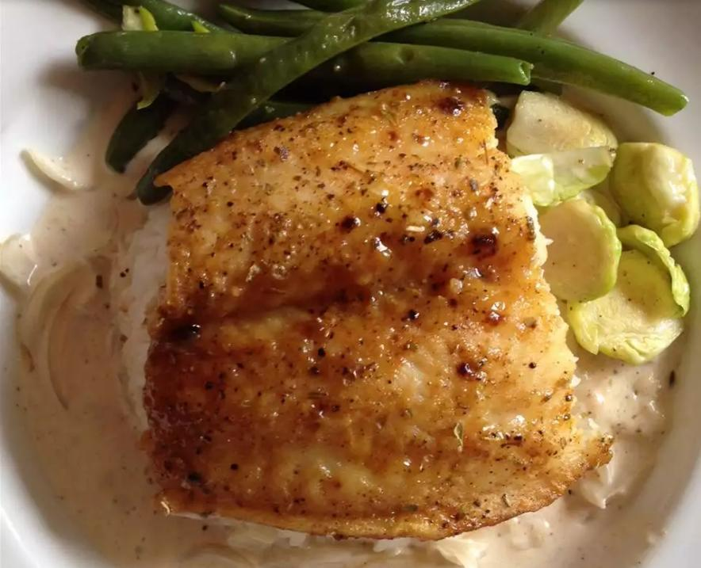

Salmon With Brown Sugar Glaze

Description
Prep: 5 mins
Cook: 10 mins
Total: 15 mins
Servings: 4
Ingredients:
- ¼ cup packed light brown sugar
- 2 tablespoons Dijon mustard
- 4 (6 ounce) boneless salmon fillets
- salt and ground black pepper to taste
Steps
-
Preheat the oven's broiler and set the oven rack at about 6 inches from the heat source;
prepare the rack of a broiler pan with cooking spray.
-
Season the salmon with salt and pepper and arrange onto the prepared broiler pan.
Whisk together the brown sugar and Dijon mustard in a small bowl; spoon mixture evenly onto top of salmon fillets.
-
Cook under the preheated broiler until the fish flakes easily with a fork, 10 to 15 minutes.